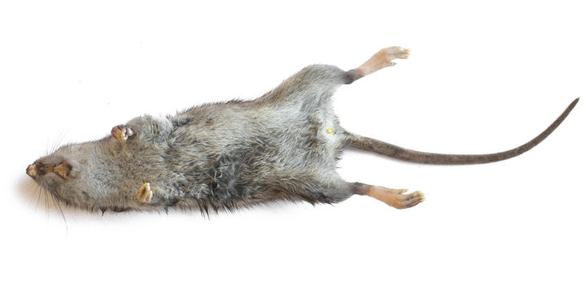
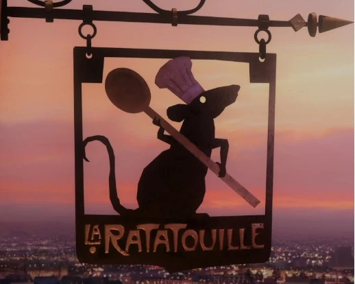
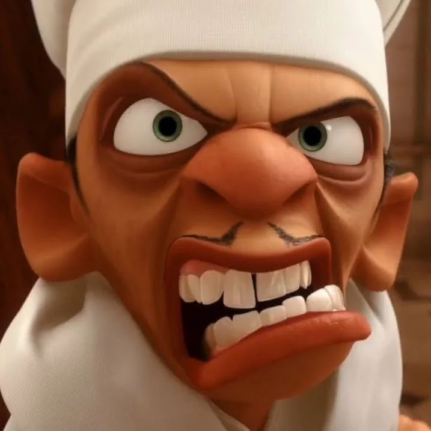

Remy the rat is a culinary genius because he watches a cooking show on TV, read a best-selling recipe book, and sometimes eats two things at the same time. He consistently takes life advice by talking1 to a hallucinated dead chef, and generally ignores the majority of social constructs across both rat and human domains. No one did it quite like him.
1 He speaks english, which humans hear in a higher pitch. As the only difference in Ratatouille between humans and rats is size and frequency (hz) of communication, I will consider them one-and-the-same for the remainder of this article.
Ratatouille is a film about legacy, the importance of institutions, and the need for occasional reinvention. Given that rats live for approximately 2-3 years, it is therefore unfortunate that Remy will not have lived long enough to reap the financial rewards from his eloquently named bistro, La Ratatouille, most likely dying mere months after opening.

Though Linguine basically gives up cooking all together to glide around on roller skates, we can only hope that La Ratatouille has a strong enough institutional memory such that he is not made immediately jobless in the event of Little Chef’s death. Perhaps a smaller, food-loving creature, like a bug, could sit on top of the head of one of Remy’s offspring and be guided by hallucinations of ghost Remy. In turn, the Parisian food scene would become progressively smaller and smaller, and culinary trends would occur at increasingly shorter intervals as the life span of each puppet-master becomes shorter and shorter. Mayfly-atouille would probably fit within a Tiktok.

Of course, that would be ridiculous. Remy is one of a kind not only among other rats but among humans themselves. It is clear that by the end of the film, all of the other rats in the colony carry some semblance of the spirit of Chef Gusteau with them. They do not steal, they maintain cleanliness, and though Remy has preached the culinary gospel to the masses and has entered the kingdom of Gust…
Wait? …. Is Remy the rat Jesus?
Throughout the film, Remy seems to be the only one to be able to engage with the ghost of Chef Gusteau, though he is reminded in a scene where they are both surprised at the same time, that the God-Chef is a figment of his own imagination. This insight tells us that Gusteau is most likely similar to a Christian god, existing in unison within the hearts and souls of rats, and not external to them.
The message that anyone can cook is further emphasised by Gusteau in his use of this internal voice, and while Remy at this stage asserts himself as a messenger of Gusteau, he has not yet preached the gospel. By spreading the culinary good-news to the colony, presumably each rat holds with them the spirit of Gusteau while clearly maintaining Remy in high-regard. With that, the holy trinity of Gusteau, Remy, and cooking spirit is finalised.

We also observe that there were false prophets in this story, most notably Chef Skinner. Skinner claims to stand for Gusteau but it is revealed that he cares not for good food, and exploits his position for financial gain at the expense of the reputation of Gusteau. For a short time, Collette herself strays from the flock, unsure of the message that Remy preaches, but even she recognises the true message of Gusteau in opposition to the false prophet Skinner.
While Pixar have been nuanced in their portrayal of rat-Jesus, there are two aspects I would like to speculate on where I believe the film did not go far enough, or that may become candidates for a strong sequel.
The first addresses the issue of Remy’s short life span. For Remy’s message to truly transcend the short lifespan of a rat and for him to gain immortal status as the one true culinary prophet, Remy had to die. Ideally, he would have remained in the rat-trap from which he inextricably escapes after his dad and brother push a gargoyle off of a church and onto the car boot, crushing the boot just enough to release him. This would have been a commoners death for Remy, unrelenting and sacrificial. In doing so, the rest of the colony would have been empowered to follow in his example, potentially leading to the financial success of La Ratatouille beyond opening night and the proceeding few months.
By instead witnessing the initial success of La Ratatouille, Remy more strongly implies that he himself is the anyone that Gusteau refers to. The remaining rats would most likely be less emboldended to consider running a restaurant for humans. In not sacrificing himself in the name of Gusteau’s message, Remy bears more resembelence to Jacob Frank, who claimed to be the reincarnation of the self-proclaimed messiah Sabbatai Zevi, and lived long enough to ensure that everyone around him got bored of the shtick, and his movement fizzled out2.
2 This is genuinely the message I got from Olga Tokarczuk’s brilliant The Books of Jacob, which I read not in preparation for this article
3 Of course, this sequel may take place in a Nietzschean future where Gusteau, as God, is himself dead. Potentially leading to postmodern rat cuisine, a return to eating ‘trash’ (rubbish), or potentially worse.
4 Catatouille
5 Dogatouille
The second avenue, given we know there is at least one messenger of Gusteau, is that there may be more. These may be copycats/rats that appear based on the presumed commercial success of La Ratatouille, or they may be genuine prophets of Gusteau. There is no reason that dead Gusteau should suddenly stop appearing in the imaginations of animals3, and similarly just because he is the main character we cannot disregard other animals that may have watched Chef Gusteau on TV, for example cats4and dogs5.
Disregarding the thousands of potential heirs to the La Ratatouille empire specifically, these competing factions of culinarily inspired animals would inevitably vie for legitimacy in an increasingly crowded market. I imagine Remy’s dunce brother Emile would be the first to claim the bloodline potentially leading to a series of culinary-rat-pontiffs that become increasingly disliked. Lollard rats from the countryside may scoff when they hear news of a new Parisian loft bistro being opened, shrines to locations such as the farmhouse Remy originally lived in will be built, and academics will convene to discuss the implications of the trinity and the true nature of Gusteau.
It is clear that the prophecy of Remy, and resulting idyllic moment in time, will be short lived. La Ratatouille is built on much more worrisome foundations than it may seem. In preaching the good-news of Gusteau but maintaining his own personal vice-like grip on animal-bistros without a clear succession plan for either the ideology or business itself, Remy will soon learn that anyone can cook.
I have chosen not to touch upon the fact that Remy can control Linguine by pulling on his hair because that is completely unbelievable.